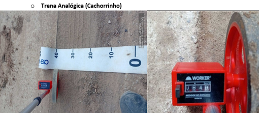
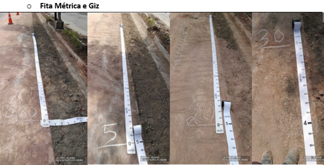
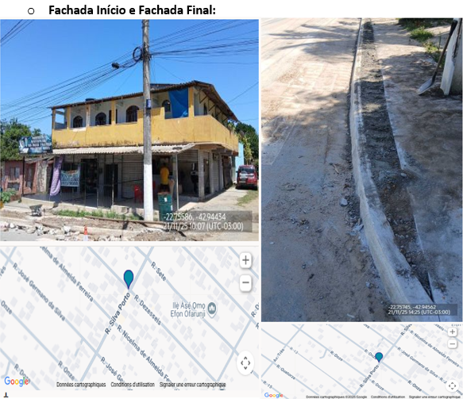
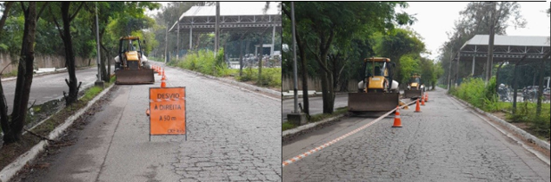
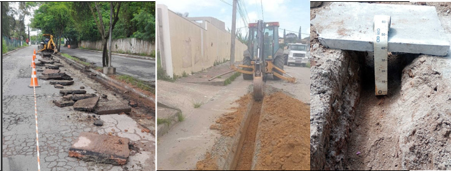
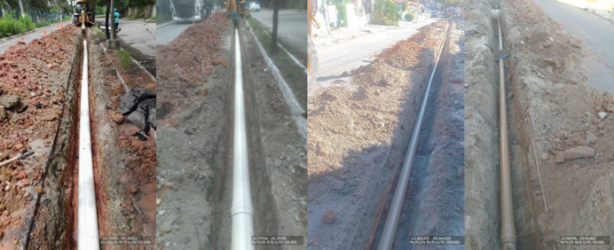
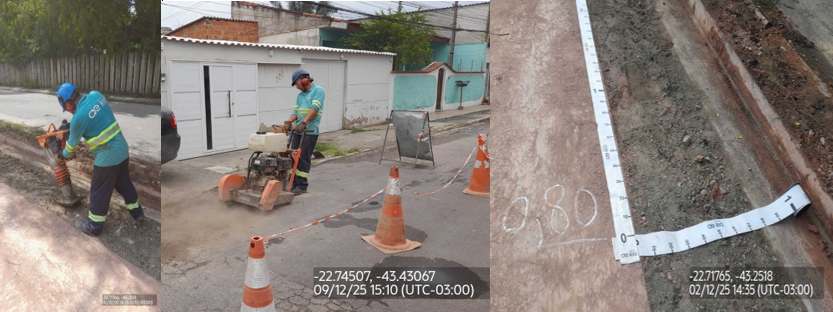

Nesta ordem, você vai executar uma extensão de rede de água.
Este serviço é muito importante para melhorar o abastecimento da população.
Siga corretamente todos os passos descritos neste guia.
Deslocamento – Field Service: A equipe deve abrir a rota no sistema e seguir
para o local da OS.
Ao chegar, confirmar se a localização no mapa confere com o endereço real onde será feita a
intervenção
Início do Serviço – Chegada ao Local: Quando você chegar ao local, identifique onde a extensão vai começar e onde vai terminar. Em seguida, observe e registre pontos de referência (casas, postes, muros ou outros) para comprovar a metragem que será executada.
Preparação do Local: Quando você chegar para executar o serviço, delimite a área onde será feita a intervenção. Use cones, fita zebrada e barreiras, quando necessário, para isolar o local e garantir a segurança.
Abertura de Vala: Quando você for abrir a vala, siga estas medidas e procedimentos:
Profundidade:• Normalmente entre 1,00 m e 1,20 m da superfície até o topo do tubo.
• Em ruas com tráfego pesado, use 1,20 m ou mais.
• Sempre deixe pelo menos 80 cm de terra acima do tubo depois de instalado.
Largura: • DN 50 a DN 75: 40 a 45 cm
• DN 100: 50 cm
• DN 150: 60 cm
• DN 200: 70 cm
Acima de DN 250: largura = diâmetro do tubo + 40 cm
(Exemplo: DN 300 → 300 mm + 40 cm = 70 cm de largura)
Nivelamento: Quando você preparar o fundo da vala, deixe tudo bem plano. Não pode ter pedras, buracos, partes altas ou qualquer coisa que atrapalhe o assentamento do tubo. Se houver desníveis maiores que 5 cm, corrija antes de continuar. O fundo deve dar apoio firme e contínuo ao tubo em toda a extensão.
Assentamento da Tubulação: Posicionamento dos TubosAssente os tubos no sentido contrário ao fluxo.
Confirme o alinhamento horizontal e vertical.
O tubo deve ficar totalmente apoiado na cama, sem folgas ou pontos forçados.
Ligação da TubulaçãoLimpe, prepare e encaixe as juntas conforme o tipo de material.
A ligação deve ficar firme e sem vazamentos, seguindo o projeto
Início do Serviço – Chegada ao Local: Quando você chegar ao local, identifique onde a extensão vai começar e onde vai terminar. Em seguida, observe e registre pontos de referência (casas, postes, muros ou outros) para comprovar a metragem que será executada.
Preparação do Local: Quando você chegar para executar o serviço, delimite a área onde será feita a intervenção. Use cones, fita zebrada e barreiras, quando necessário, para isolar o local e garantir a segurança.
Abertura de Vala: Quando você for abrir a vala, siga estas medidas e procedimentos:
Profundidade:• Normalmente entre 1,00 m e 1,20 m da superfície até o topo do tubo.
• Em ruas com tráfego pesado, use 1,20 m ou mais.
• Sempre deixe pelo menos 80 cm de terra acima do tubo depois de instalado.
Largura: • DN 50 a DN 75: 40 a 45 cm
• DN 100: 50 cm
• DN 150: 60 cm
• DN 200: 70 cm
Acima de DN 250: largura = diâmetro do tubo + 40 cm
(Exemplo: DN 300 → 300 mm + 40 cm = 70 cm de largura)
Nivelamento: Quando você preparar o fundo da vala, deixe tudo bem plano. Não pode ter pedras, buracos, partes altas ou qualquer coisa que atrapalhe o assentamento do tubo. Se houver desníveis maiores que 5 cm, corrija antes de continuar. O fundo deve dar apoio firme e contínuo ao tubo em toda a extensão.
Assentamento da Tubulação: Posicionamento dos TubosAssente os tubos no sentido contrário ao fluxo.
Confirme o alinhamento horizontal e vertical.
O tubo deve ficar totalmente apoiado na cama, sem folgas ou pontos forçados.
Ligação da TubulaçãoLimpe, prepare e encaixe as juntas conforme o tipo de material.
A ligação deve ficar firme e sem vazamentos, seguindo o projeto
Toda extensão deve ter a tubulação medida. Abaixo estão os métodos que devem ser usados para fazer
essa aferição


Você pode usar a trena analógica (cachorrinho) para medir todo o comprimento da
vala. Se
usar fita métrica de 5 a 10 metros, marque o chão com giz para identificar os
pontos medidos
e garantir a metragem correta.

Registre no Field Service a fachada inicial e a fachada final do trecho da
extensão. As fotos
com geolocalização comprovam onde o serviço começou e terminou. Se não houver fachada, registre
o ponto fixo mais próximo (poste, esquina, número visível ou outro ponto de referência).
A seguir apresentamos o padrão de fotos que deve ser seguido na execução do serviço de extensão.
Garantir a segurança do local onde
será feita a intervenção.
Você deve registrar a abertura da vala
e medir a profundidade executada, garantindo a comprovação no sistema.
Sua equipe deverá evidenciar a
rede devidamente assentada, de ângulos diferente de todo o comprimento da Extensão
Seguir o procedimento evidenciado
no modulo anterior em Aferição da
Extensão
Se sua equipe for responsável pelo
reaterro, registre o uso do compactador e mostre a vala recortada corretamente. A aferição deve
seguir os padrões exigidos.
Abrir desdobro de "Reaterro de Valas"
Finalizar o serviço
Abrir desdobro de "Repavimentação Concreto"
Abrir o desdobro de "Repavimentação Asfalto"
Abrir o desdobro de "Reaterro Vala"